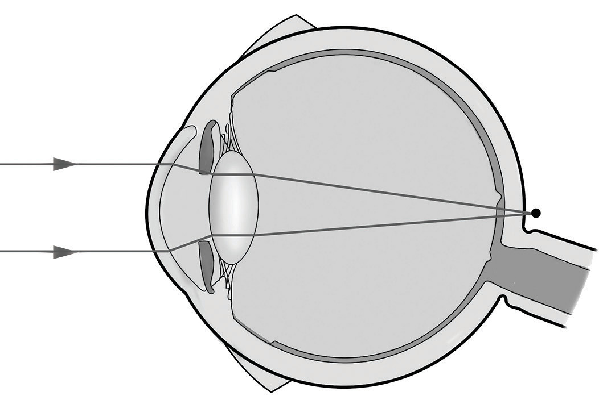
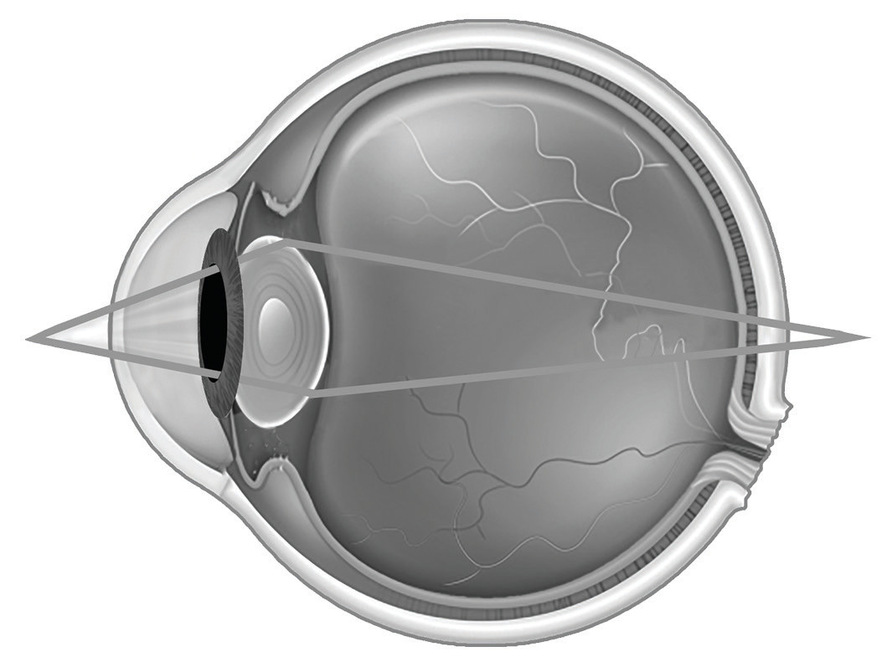

Note that lenses used for vision correction are usually described in terms of lens power, P, which is given by the reciprocal focal length expressed in metres. Hence,
The unit of lens power is the dioptre, D. Thus, a lens with has a power of 2.0 D, corresponds to 4.0 D, and so on. The numbers used for the prescription of the glass lenses are usually powers expressed in diopters.
Long-sightedness (hyperopia)
In the hyperopic (long-sightedness or far-sightedness) eye, the eyeball is too short or the cornea is not curved enough. This causes the rays of light from a near object to be focused behind the retina. A person suffering from long sightedness can see distant objects clearly, but cannot see nearby objects clearly. The near point of the eye may be more than a metre away, making ordinary reading difficult. Figure 6.23 illustrates the hyperopic eyes.

Note that the myopic eye produces too much convergence of light rays from a distant object, while a hyperopic eye produces insufficient convergence of rays of light from a near object.
Presbyopia
Presbyopia is the gradual loss of the eye’s ability to focus on nearby objects because of old age. The term “presbyopia” comes from a Greek word that means “old eye.” This defect is normally observed after the age of 40 years. Presbyopia is caused by loss of eye lens flexibility, which is necessary to change its focal length in order to focus on objects. This results in insufficient accommodation, leading to image formation behind the retina, as shown in Figure 6.24.

Correction of hyperopia and presbyopia
In the case of either a presbyopic or a hyperopic eye, the near point is farther from the eye than normal. Therefore, to see clearly an object at a normal reading distance, which is about 25 cm, a convex